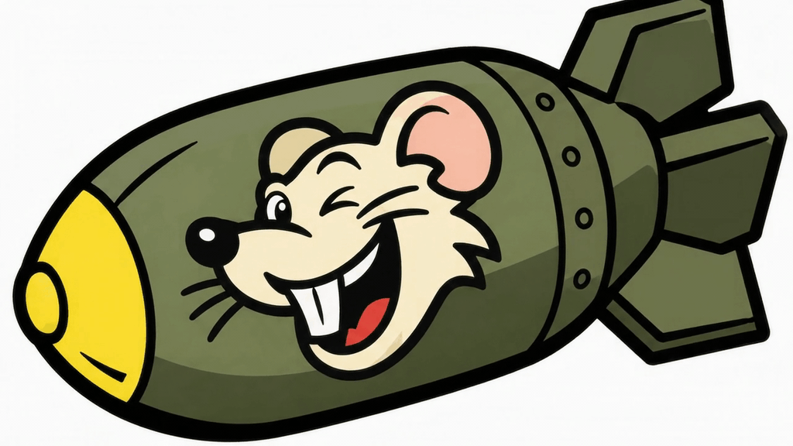

01:26:00
TUESDAY // 03.11.2026
PWR [AC]
100%
NET:
ONLINE
> NEW LOG ENTRY
>
> MEMORY STATUS: 0 ACTIVE
> SECURE STORAGE // OK
ACTIVE LOGS
SYS.SEC // QUEST-LOG
00:00:00
STATUS: ACTIVE
[ OFFLINE CACHE MODE ]
MOSTRANDO SECTORES GUARDADOS EN CACHÉ...
LAT: WAITING // LON: GPS...
00:00:00
WAITING FOR SATELLITE FIX...
VOL
80%
00:00
00:00
SYS.SEC // AUDIO-UPLINK
13:14:52
FREQ: ACTIVE